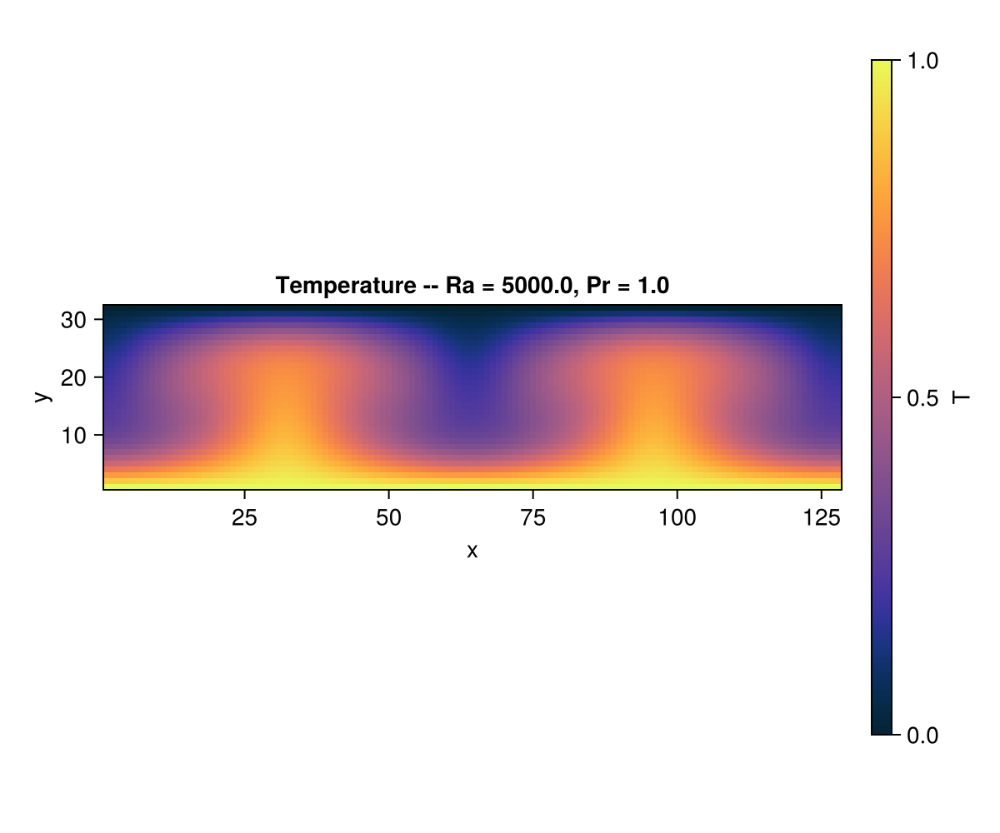
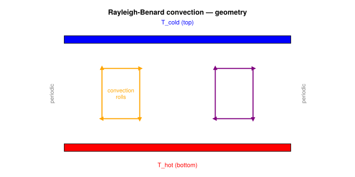
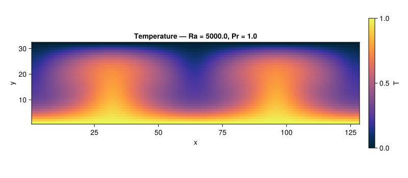
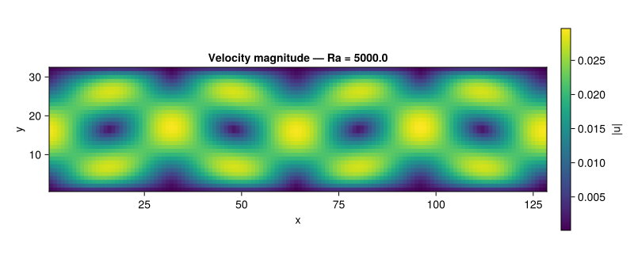

Rayleigh–Bénard Convection (2D)
Concepts: Thermal DDF · Boussinesq coupling
Validates against: De Vahl Davis (1983) — Nusselt number vs Rayleigh 10.1002/fld.1650030305
Download: rayleigh_benard.krk
Hardware: Apple M2, ~90s wall-clock at 128×64 (Ra = 10⁵)

Physical background
Rayleigh–Bénard convection is one of the most studied problems in fluid dynamics. A horizontal fluid layer is heated from below and cooled from above. Gravity acts downward. The hot fluid at the bottom is lighter and "wants" to rise, while the cold fluid at the top is heavier and "wants" to sink. Whether this actually happens depends on a single dimensionless number: the Rayleigh number.

The Rayleigh number
The Rayleigh number measures the ratio of buoyancy-driven destabilisation to viscous and thermal damping:
\[\mathrm{Ra} = \frac{g\,\beta\,\Delta T\, H^3}{\nu\,\alpha}\]
where:
- $g$ — gravitational acceleration
- $\beta$ — thermal expansion coefficient
- $\Delta T = T_H - T_C$ — temperature difference between the plates
- $H$ — distance between the plates
- $\nu$ — kinematic viscosity
- $\alpha = \nu / \mathrm{Pr}$ — thermal diffusivity
Below the critical value $\mathrm{Ra}_c \approx 1708$ (for no-slip walls), viscosity and thermal diffusion win: the fluid remains still and heat transfer is purely conductive. This is what we tested in the heat conduction example.
Above $\mathrm{Ra}_c$, buoyancy wins: the conductive state becomes unstable and convection rolls appear spontaneously. Hot fluid rises in plumes, cold fluid sinks, and the heat transfer rate increases dramatically.
Boussinesq approximation
In the Boussinesq approximation, density variations are neglected everywhere except in the buoyancy term of the momentum equation:
\[\mathbf{F}_{\text{buoy}} = -\rho_0 \, g \, \beta \, (T - T_{\text{ref}}) \, \hat{\mathbf{y}}\]
The fluid is otherwise treated as incompressible. This is an excellent approximation when $\beta \, \Delta T \ll 1$, which is the standard regime for Rayleigh–Bénard convection.
In Kraken's LBM implementation, the Boussinesq force is incorporated via the Guo forcing scheme, which ensures second-order accuracy. The DDF thermal solver (see heat conduction) provides the temperature field at each time step.
The Nusselt number
The Nusselt number quantifies how much convection enhances heat transfer compared to pure conduction:
\[\mathrm{Nu} = \frac{\text{total heat flux}}{\text{conductive heat flux}}\]
- $\mathrm{Nu} = 1$ → pure conduction (no flow)
- $\mathrm{Nu} > 1$ → convection enhances heat transfer
For $\mathrm{Ra} = 10\,000$, the expected Nusselt number is approximately $\mathrm{Nu} \approx 2.5$.
LBM setup
| Parameter | Value |
|---|---|
| Lattice | D2Q9 (flow) + D2Q9 (thermal DDF) |
| Domain | $128 \times 64$ |
| Bottom | Isothermal no-slip wall, $T = T_H = 1$ |
| Top | Isothermal no-slip wall, $T = T_C = 0$ |
| Left/Right | Periodic |
| $\mathrm{Ra}$ | 10 000 (supercritical) |
| $\mathrm{Pr}$ | 0.71 (air) |
We use $\mathrm{Pr} = 0.71$ (air) to demonstrate that the solver handles $\mathrm{Pr} \neq 1$, i.e., different relaxation times for the flow and thermal populations.
Simulation
using Kraken
Ra = 10_000.0
Pr = 0.71
T_hot = 1.0
T_cold = 0.0
ρ, ux, uy, Temp, config, Ra_out, Pr_out, ν, α = run_rayleigh_benard_2d(;
Nx=128, Ny=64, Ra=Ra, Pr=Pr, T_hot=T_hot, T_cold=T_cold, max_steps=50000)Results — temperature field
The temperature field reveals the convective structure. Hot plumes (red) rise from the bottom boundary layer, while cold plumes (blue) descend from the top. In the bulk, convective mixing creates a more uniform temperature compared to the linear conductive profile.
Nx_dom, Ny_dom = size(Temp)Plot: Temperature field
using CairoMakie
fig = Figure(size=(800, 400))
ax = Axis(fig[1, 1];
title = "Temperature field — Ra = $(Int(Ra))",
xlabel = "x", ylabel = "y", aspect = DataAspect())
hm = heatmap!(ax, 1:Nx_dom, 1:Ny_dom, Temp; colormap = :coolwarm)
Colorbar(fig[1, 2], hm; label = "T")
save(joinpath(@__DIR__, "rayleigh_benard_temperature.svg"), fig)
fig
Results — velocity field
The velocity magnitude shows pairs of counter-rotating convection rolls. Fluid rises in the hot plumes, moves horizontally near the top and bottom walls, and descends in the cold plumes. The rolls are roughly as wide as they are tall — a well-known feature of Rayleigh–Bénard convection near onset.
umag = @. sqrt(ux^2 + uy^2)Plot: Velocity magnitude
fig2 = Figure(size=(800, 400))
ax2 = Axis(fig2[1, 1];
title = "Velocity magnitude — Ra = $(Int(Ra))",
xlabel = "x", ylabel = "y", aspect = DataAspect())
hm2 = heatmap!(ax2, 1:Nx_dom, 1:Ny_dom, umag; colormap = :viridis)
Colorbar(fig2[1, 2], hm2; label = "|u|")
save(joinpath(@__DIR__, "rayleigh_benard_velocity.svg"), fig2)
fig2
Mean temperature profile
The horizontally-averaged temperature profile $\langle T \rangle_x(y)$ highlights the difference between conduction and convection:
- Conductive regime: linear profile (dashed grey line)
- Convective regime: thin boundary layers near the walls with a well-mixed, nearly uniform core
The thinner the boundary layers, the higher the Nusselt number.
T_avg = [sum(Temp[:, j]) / Nx_dom for j in 1:Ny_dom]
y_norm = [(j - 0.5) / (Ny_dom - 1) for j in 1:Ny_dom]
T_lin = [T_hot - (T_hot - T_cold) * y for y in y_norm]The departure from the linear profile is the signature of convective heat transfer. Near the walls, steep temperature gradients indicate thin thermal boundary layers; in the bulk, the profile is nearly flat.
What this test validates
| Component | Validated? |
|---|---|
| Thermal-fluid coupling (DDF + Boussinesq) | yes |
| Buoyancy force (Guo scheme) | yes |
| Spontaneous symmetry breaking (convection onset) | yes |
| Correct roll structure at supercritical Ra | yes |
| $\mathrm{Pr} \neq 1$ handling | yes |
This example confirms that Kraken correctly couples the thermal and flow solvers. The next step in complexity is Hagen–Poiseuille flow, which introduces axisymmetric geometry.
References
- Guo et al. (2002) — Boussinesq forcing in LBM
- He et al. (1998) — Thermal DDF model
- Kruger et al. (2017) — LBM textbook